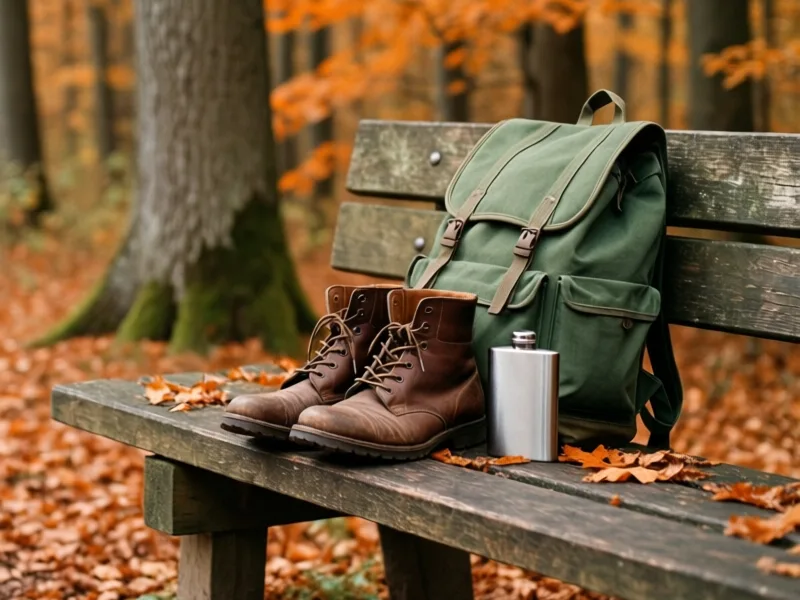

A membership runs from January to December. Join in any month: the welcome is the same.
Paid once a year, by bank transfer or at a walk.
Your first walk is free. Turn up ten minutes early.
One page, online: your name, an address, a person to call.
By transfer, or to the treasurer at the next walk.
What to bring:

No. Start with the easy walk on Wednesday and see.
Yes, on a lead, except where a path forbids it.
We walk. A walk is called off only for a storm warning.
Yes, with an adult. The family walk is made for them.